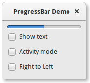

9. Barra de Progresso¶
O Gtk.ProgressBar é normalmente usado para exibir o progresso de uma operação longa. Ele fornece uma pista visual de que o processamento está em andamento. O Gtk.ProgressBar pode ser usado em dois modos diferentes: modo de porcentagem e modo de atividade.
Quando uma aplicação pode determinar quanto trabalho precisa ocorrer (por exemplo, ler um número fixo de bytes de um arquivo) e monitorar seu progresso, ela pode usar Gtk.ProgressBar no modo percentage e o usuário vê uma barra crescente indicando a porcentagem do trabalho que foi concluído. Neste modo, o aplicativo é necessário para chamar Gtk.ProgressBar.set_fraction() periodicamente para atualizar a barra de progresso, passando um float entre 0 e 1 para fornecer o novo valor percentual.
Quando um aplicativo não tem uma maneira precisa de saber a quantidade de trabalho a ser feito, ele pode usar o modo de atividade, que mostra a atividade de um bloco se movendo para frente e para trás na área de progresso. Neste modo, o aplicativo é necessário para chamar Gtk.ProgressBar.pulse() periodicamente para atualizar a barra de progresso. Você também pode escolher o tamanho do passo, com o método Gtk.ProgressBar.set_pulse_step().
Por padrão, Gtk.ProgressBar é horizontal e da esquerda para a direita, mas você pode alterá-lo para uma barra de progresso vertical usando o método Gtk.ProgressBar.set_orientation(). Mudar a direção da barra de progresso pode ser feito usando Gtk.ProgressBar.set_inverted(). Gtk.ProgressBar também pode conter texto que pode ser definido chamando Gtk.ProgressBar.set_text() e Gtk.ProgressBar.set_show_text().
9.1. Exemplo¶
1 2 3 4 5 6 7 8 9 10 11 12 13 14 15 16 17 18 19 20 21 22 23 24 25 26 27 28 29 30 31 32 33 34 35 36 37 38 39 40 41 42 43 44 45 46 47 48 49 50 51 52 53 54 55 56 57 58 59 60 61 62 63 64 65 66 67 68 69 70 71 72 73 | import gi
gi.require_version('Gtk', '3.0')
from gi.repository import Gtk, GObject
class ProgressBarWindow(Gtk.Window):
def __init__(self):
Gtk.Window.__init__(self, title="ProgressBar Demo")
self.set_border_width(10)
vbox = Gtk.Box(orientation=Gtk.Orientation.VERTICAL, spacing=6)
self.add(vbox)
self.progressbar = Gtk.ProgressBar()
vbox.pack_start(self.progressbar, True, True, 0)
button = Gtk.CheckButton("Show text")
button.connect("toggled", self.on_show_text_toggled)
vbox.pack_start(button, True, True, 0)
button = Gtk.CheckButton("Activity mode")
button.connect("toggled", self.on_activity_mode_toggled)
vbox.pack_start(button, True, True, 0)
button = Gtk.CheckButton("Right to Left")
button.connect("toggled", self.on_right_to_left_toggled)
vbox.pack_start(button, True, True, 0)
self.timeout_id = GObject.timeout_add(50, self.on_timeout, None)
self.activity_mode = False
def on_show_text_toggled(self, button):
show_text = button.get_active()
if show_text:
text = "some text"
else:
text = None
self.progressbar.set_text(text)
self.progressbar.set_show_text(show_text)
def on_activity_mode_toggled(self, button):
self.activity_mode = button.get_active()
if self.activity_mode:
self.progressbar.pulse()
else:
self.progressbar.set_fraction(0.0)
def on_right_to_left_toggled(self, button):
value = button.get_active()
self.progressbar.set_inverted(value)
def on_timeout(self, user_data):
"""
Update value on the progress bar
"""
if self.activity_mode:
self.progressbar.pulse()
else:
new_value = self.progressbar.get_fraction() + 0.01
if new_value > 1:
new_value = 0
self.progressbar.set_fraction(new_value)
# As this is a timeout function, return True so that it
# continues to get called
return True
win = ProgressBarWindow()
win.connect("destroy", Gtk.main_quit)
win.show_all()
Gtk.main()
|